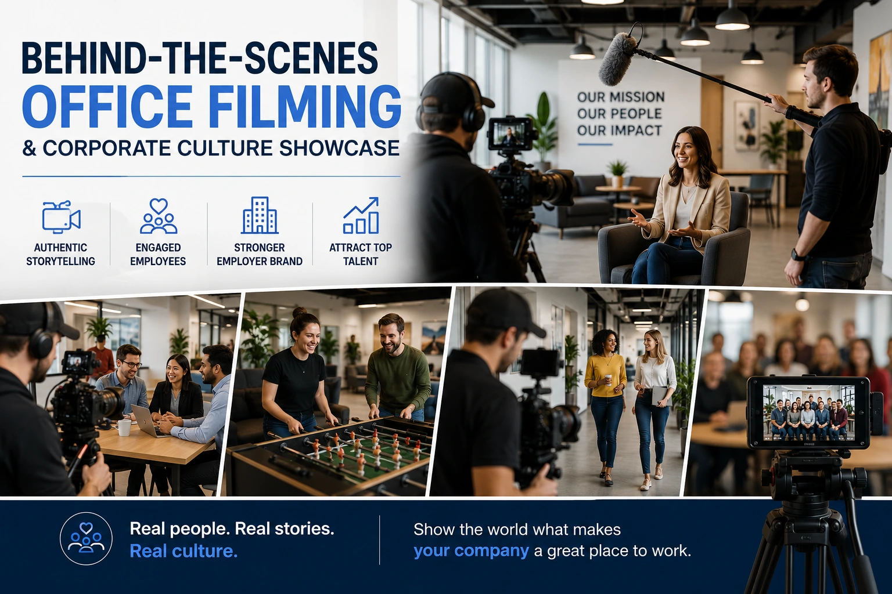

Why Studio-Quality Employer Branding Videos are Your Best Recruitment Tool
The Talent Acquisition Problem That Job Postings Cannot Solve
India's most talented professionals — the engineers, designers, product managers, and operators that ambitious companies compete hardest for — are not searching for a job. They are evaluating opportunities. And the evaluation criteria they apply have shifted fundamentally over the past five years: compensation is necessary but no longer sufficient; the quality of the team, the clarity of the mission, and the character of the working culture are the primary differentiators that determine which offer they accept.
The problem is that these differentiators — culture, team quality, working environment — are almost entirely invisible from the outside. A job posting communicates responsibilities and requirements. A salary range communicates the commercial offer. Neither communicates what it actually feels like to work at the company, what the team is like, or why someone who has other options should choose this specific opportunity.
Employer branding video production closes this gap. A professionally produced corporate culture showcase film — featuring real team members, in the real working environment, communicating their genuine experience — gives a candidate the information they need to form a positive emotional impression of the company before any recruitment conversation takes place. And a candidate who arrives at the first interview already positively impressed is a candidate who is already partially converted.
What Elite Candidates Are Actually Evaluating
Understanding what attracting elite talent with video requires means understanding what elite candidates are evaluating when they choose between opportunities. Research into high-performing professional decision-making consistently identifies the same priority hierarchy:
- Quality of the immediate team. The people they will work with daily — their intelligence, their values, their collaborative style — is the most weighted factor in career decisions for senior and high-performing professionals. A candidate who can see genuine team members in an employer branding video — who hears their actual perspectives, observes their real working relationships, and forms an impression of the team's character — is making a more informed decision about this most important factor.
- Quality and character of leadership. The direct manager and senior leadership team communicate a significant proportion of the working experience at any company. A founder or leader who appears in an employer branding video with genuine conviction, clear communication, and authentic personal presence communicates leadership quality in a way that no written description of leadership style can.
- Mission clarity and commercial momentum. High-performing professionals want to work on something significant at a moment when it matters. An employer branding video that clearly articulates what the company is building, why it matters, and why this is the right moment to be part of it communicates the opportunity dimension that converts a passive audience member into an active applicant.
- Working environment and culture signals. The physical and interpersonal environment — the workspace quality, the collaboration style, the energy of the place — is visible in behind-the-scenes office filming in a way that no written culture description communicates. Genuine footage of a real working environment produces an immediate, authentic impression that a candidate carries into every subsequent stage of the recruitment process.
Higher Quality Applicant Pool
Candidates who have self-selected by watching an employer branding video and finding the culture compelling are better aligned with the company's values and working style than cold applicants responding to a job posting alone. Self-selection through video reduces mis-hire risk.
Shorter Time-to-Hire
A candidate who arrives at the first interview already positively impressed — having formed a genuine emotional connection with the team and culture through the employer branding video — requires fewer touchpoints to convert to an offer acceptance. The positive impression compresses the trust-building that the recruitment process normally constructs from scratch.
Higher Offer Acceptance Rate
Candidates who have felt a genuine emotional connection with a company's culture through employer branding content before receiving an offer are significantly more likely to accept that offer — even over competing offers at equivalent or higher compensation levels.
Reduced Recruitment Marketing Cost
A professionally produced employer branding video is a long-term asset that continues generating qualified candidate attention and positive brand association for 18 to 24 months after production. Its per-hire cost, amortised across the candidate pipeline it generates, is significantly lower than equivalent recruitment advertising spend.

Behind-the-Scenes Office Filming: The Authenticity Standard
Behind-the-scenes office filming is the production approach that produces the most commercially effective employer branding content — because it shows the real working environment, with real people, doing real work, rather than a staged interpretation of what the company wants candidates to believe the working environment looks like. The distinction matters: candidates who have experience of corporate communication know the difference between a polished brand film and genuine documentary footage, and they weight the latter significantly more heavily in their employer evaluation.
The specific approaches that make behind-the-scenes office filming genuinely authentic rather than authenticity-performed:
- Documentary coverage of genuine working moments. The camera is present during actual working sessions — a product review meeting, a code review, a design critique, a client call preparation — capturing the real interpersonal dynamics of the team without directing or staging the interactions. The resulting footage has the observational quality of genuine documentary work, and candidates recognise its authenticity immediately.
- Interview segments conducted as conversations, not performances. Team member testimonials in employer branding videos perform best when the interview is conducted as a genuine conversation — the interviewer asking questions that produce spontaneous, thoughtful answers rather than rehearsed statements. The slight pauses, the specific personal details, the occasional laughter or emotion that emerge from genuine conversation are the signals that communicate authenticity to a candidate evaluating whether the video reflects reality.
- The actual physical environment, not a staged version of it. A workspace filmed as it actually exists — with the working materials, the personal touches, the functional imperfections of a genuine office — communicates operational reality far more effectively than a tidied, staged version of the same space. Candidates evaluating a workplace are evaluating what they will actually encounter, not what the communications team decided to show them.
- Leadership filmed in their actual working context. A founder or department head filmed during a genuine working moment — reviewing a product, talking with a team member, working through a decision — communicates leadership style in its authentic form. A founder filmed presenting to camera in a carefully arranged background communicates performance, which candidates find less persuasive than genuine working behaviour.
Corporate Culture Showcase Films: The Complete Format
Corporate culture showcase films are the primary format for employer branding video production — the anchor piece of content that communicates the company's complete employer value proposition in a single, structured video of two to four minutes. The specific structural components of a high-performing corporate culture showcase film:
- Opening: the mission hook (20 to 30 seconds). The first thirty seconds of an employer branding video are the most critical — because candidates evaluate whether the company's work is interesting and significant before they evaluate anything else. The opening should state the company's mission and the problem it is solving in a way that communicates both the scale of the opportunity and the specific intellectual challenge of the work. Not "we are building software solutions for businesses" but "we are making it possible for a Madurai textile manufacturer to track their entire production line from their phone — and we are just getting started."
- Team section: the human reality (60 to 90 seconds). The largest section of the film should feature actual team members — specific individuals, in specific roles, with specific things to say about their experience at the company. Three to four people, each contributing 15 to 25 seconds of genuine, specific testimony. The specificity is essential: "I joined because the engineering challenges here are genuinely hard and the team is genuinely good" is a testimonial; "I love working here because of the culture and the mission" is not.
- Culture and environment section: the daily reality (30 to 45 seconds). Documentary footage of the actual working environment — teams in collaboration, individuals focused, the physical workspace — that allows the candidate to form a visual impression of what their daily working life would actually look like. This section should feel observational rather than promotional — the camera is watching, not performing.
- Leadership section: vision and character (20 to 30 seconds). A brief, authentic contribution from the founder or a senior leader that communicates the company's vision and the leader's personal character. Not a mission statement reading — a specific, genuine expression of what the leader is building and why they believe in it.
- Closing: the opportunity invitation (15 to 20 seconds). A direct, specific invitation to the candidate — what the company is looking for, why this is an important moment to join, and the specific action the candidate should take. The call to action in an employer branding video is not "apply now" — it is "if this resonates with how you think about your career, we would like to meet you."
Team-Centric Corporate Videography: The Format Library
Beyond the anchor corporate culture showcase film, a complete recruitment media assets library includes multiple shorter-format pieces of team-centric corporate videography that serve different distribution contexts and candidate touchpoints:
Department Culture Films (60 to 90 seconds)
- One film per major department — engineering, design, sales, operations — featuring the specific team and specific work of that department
- Targeted at candidates for roles in that specific department rather than the general company culture audience
- Linked from specific job postings to give role-specific candidates a department-specific culture view
- Published on the careers page alongside the relevant job listings
Employee Story Films (30 to 60 seconds each)
- Individual team member feature films — one person, their specific career journey at the company, their specific work
- Most authentic and most shared format in employer branding content — because individuals sharing their genuine stories are the most credible employer brand ambassadors available
- Published to LinkedIn natively by the company and ideally reshared by the featured employee to their personal network
- Produced as a series — one new employee story every 4 to 6 weeks — provides ongoing content without requiring a full production session each time
Day-in-the-Life Videos (60 to 90 seconds)
- A single team member followed through a genuine working day — the morning start, the collaboration moments, the work challenges, the day close
- Most useful for role-specific recruitment — a candidate applying for a product manager role watching a day-in-the-life of an existing product manager is receiving the most relevant possible information about the role
- Requires minimal direction — the subject goes about their working day while the camera observes, resulting in the most naturally authentic content format in the employer branding library
HR Marketing Campaign Media: Distributing Employer Branding Content
HR marketing campaign media is the distribution strategy that ensures employer branding video content reaches the specific candidate audiences the company is trying to attract. Production without distribution produces employer branding content that is seen only by people who are already engaged with the company — which is useful for retention but insufficient for talent acquisition.
The distribution framework for employer branding video content:
- LinkedIn company page: the primary organic distribution channel. LinkedIn is where the overwhelming majority of Indian professional talent evaluation happens — and native video published on a company's LinkedIn page reaches a relevant professional audience organically. The employer branding anchor film, department culture films, and employee story series should all be published natively to LinkedIn, with the company encouraging team members to reshare to their own networks (extending reach to the professional connections of every team member who reshares).
- Careers page: the evaluation decision support channel. The company's careers page is visited by candidates who are already interested enough to investigate — the highest-intent audience in the employer brand funnel. Embedding the anchor employer branding film prominently on the careers page, with department culture films linked from relevant job listings, supports the evaluation decision of candidates who are already considering the company.
- LinkedIn paid advertising: the active talent outreach channel. LinkedIn's targeting capabilities allow employer branding video content to be served to specific professional audiences — by company type, by job function, by seniority level, by skill set, by educational background — who match the profile of ideal candidates for current or upcoming roles. An employer branding video served as a LinkedIn video ad to a specifically targeted professional audience is the most precise passive talent attraction tool available.
- YouTube: the long-form discovery channel. A dedicated YouTube channel or playlist for employer branding content reaches candidates who are researching the company through Google — particularly effective for candidates evaluating the company as part of a more thorough due diligence process. YouTube content also benefits from Google indexing, making the employer branding content discoverable through searches for the company name, the company's industry, or specific keywords related to the company's work.
- Recruitment platforms and job listing pages. Video-enhanced job listings on platforms like LinkedIn Jobs, Naukri, and Indeed perform significantly better than text-only listings. A 60 to 90 second culture video embedded in or linked from a job listing gives the candidate a immediate impression of the working environment before they make the decision to apply — which both increases the quality of applicants and reduces the time invested by candidates who determine through the video that the culture is not the right fit.
Modern Workplace Promotional Shoots: Production Standards for Credibility
Modern workplace promotional shoots for employer branding must achieve a specific balance: professional enough in production quality to communicate brand credibility, authentic enough in approach to communicate genuine culture rather than corporate performance. The production standards that achieve this balance:
- Professional lighting that feels natural, not studio-lit. The workspace footage in an employer branding video should feel like genuinely good natural light — directional, warm, flattering — not like a television studio production. A skilled DP achieves this by augmenting the space's natural light with minimal, carefully positioned supplementary lighting that enhances rather than replaces the ambient environment. The result is footage that looks significantly better than phone footage of the same space while feeling entirely natural and unproduced.
- Interview setup that communicates the working environment context. Employee interviews in employer branding videos should be shot with the actual workspace visible and identifiable in the background — not against a pulled-up backdrop or in a conference room stripped of context. The environmental background communicates the quality and character of the working space simultaneously with the employee's spoken testimony.
- 4K capture for multi-format delivery. Shooting employer branding content in 4K allows the footage to be cropped and reformatted for different distribution contexts without quality loss — horizontal for YouTube and website, vertical for LinkedIn Stories and Instagram Reels, square for LinkedIn feed posts — from the same source footage.
- Professional audio for all interview segments. The most damaging production failure in employer branding video is poor audio in the interview segments — a team member speaking with room echo, background noise, or a quiet, distant recording that requires the viewer to strain to understand them. Professional lapel microphone placement, controlled acoustic environment, and post-production audio treatment are non-negotiable for employer branding content that is meant to reflect the company's professional standards.
Conclusion
Employer branding video production is not a marketing investment — it is a talent acquisition investment with measurable returns in applicant quality, time-to-hire, offer acceptance rate, and cost-per-hire. The companies competing most effectively for India's most talented professionals in 2026 are the ones that have made their culture visible — through corporate culture showcase films, behind-the-scenes office filming, team-centric corporate videography, and a systematic HR marketing campaign media distribution strategy that reaches the specific professional audiences they need to attract.
A job posting competes for a candidate's attention alongside hundreds of other job postings. A professionally produced employer branding video competes for a candidate's emotional investment — and it wins that competition, because it is the only communication format that shows them what matters most: the real people, the real work, and the real opportunity that makes this company worth choosing.
At The PhD Ads, we produce employer branding video production for Indian companies — corporate culture showcase films, behind-the-scenes office filming, team-centric corporate videography, and complete recruitment media assets built to attract the talent that drives the next stage of the company's growth.
Key Topics
Ready to Build the Employer Brand That Attracts Elite Talent?
At The PhD Ads, we produce employer branding videos, corporate culture showcase films, and team-centric workplace videography for Indian companies ready to compete for the most talented professionals in their industry — authentic, professionally produced, and strategically distributed to reach the right candidates.
Email: team@e2o.in